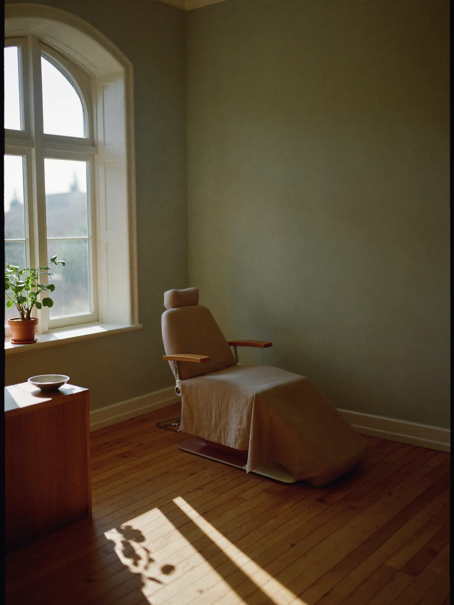
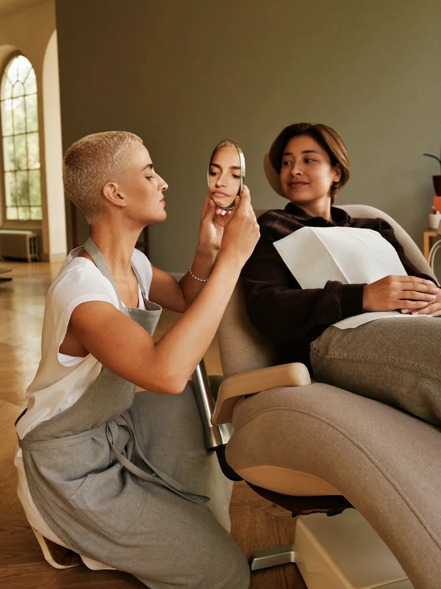
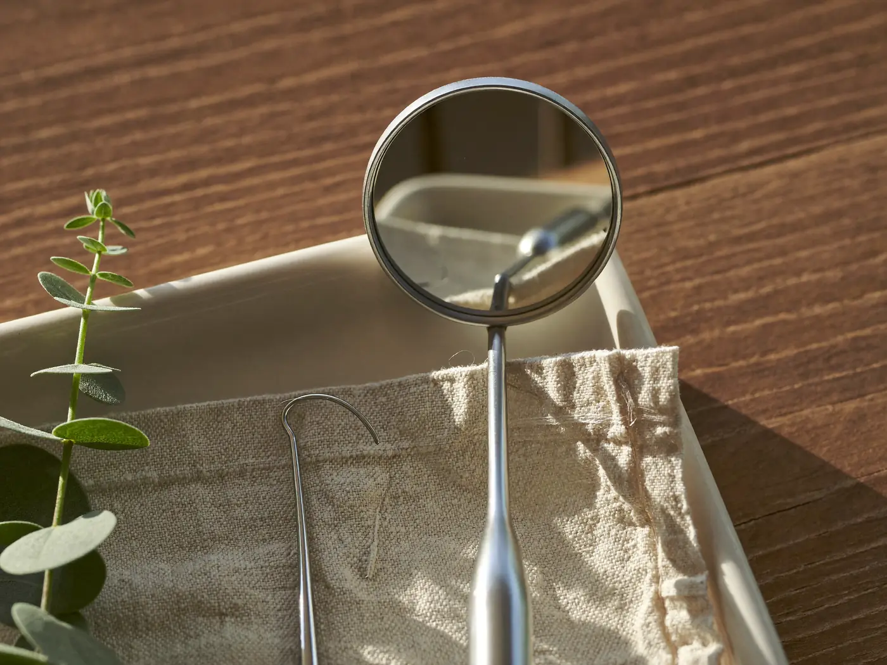

Explained first
You'll see the photos, the chart, and the why before anything else. Questions are part of the appointment, not a delay to it.
Dental studio · early appointments · fictional demo
A small studio with linen chairs, oak floors, and no fluorescent hum. Every step is explained before it begins, priced before the chair tilts — and the drill stays quiet until you've heard the plan.

the studio, 7:58 am — before the first hello
The three quiet rules
You'll see the photos, the chart, and the why before anything else. Questions are part of the appointment, not a delay to it.
Numbing gets its full seven minutes — timed, not guessed. We test before we start, and we tell you what we're testing.
The number you hear standing up is the number on the way out. A surprise line item is a failure on our side, never yours.
The record · FDI notation
a sample chart — this is a demonstration studio; scroll and the check-up happens
Upper row teeth 18 to 11 then 21 to 28, lower row 48 to 41 then 31 to 38. Most teeth are quiet; 16 has a sealant from 2024, 25 is being watched, 36 has a crown from 2019, 46 a filling from 2022, and 53 is a retained baby tooth that never left — still doing its job.
One appointment, timed honestly
You arrive early, on purpose
Linen chair, real coffee, no clipboard chase — your forms were two calm emails ago.
The talk-through
Photos on the big screen, the chart on paper. You hear everything that could happen today.
The nod
Or not — plenty of first visits end here, with a plan and a handshake. That's a good visit.
Numbing, properly timed
The full seven minutes, timed on the wall clock you can see. We wait. You breathe.
The work, narrated
Every instrument named before it's lifted. Raise a hand, everything stops — that's a rule, not a slogan.
Rinse, review, photos
You see what happened, next to what it looked like before. The chart gets its new quiet marks.
Out, with the same number
The price from 09:00, unchanged. Next slot suggested, never pushed.

62 minutes, door to door. The schedule holds one appointment per hour — running late is something we do to lunch, not to you.
Plans · sample pricing
First & yearly
The unhurried hour: chart, photos, clean, and the talk-through.
$145sample plan pricing · rebates vary
When something needs doing
Fillings, seals, small repairs — narrated, numbed on the clock.
from $280quoted exactly before you sit — the number doesn't move
Membership
Two check-ups a year, priority gentle slots, and a chart that's never a stranger.
$16per month · sample plan pricing · cancel anytime, no speech
All pricing is demonstration data for a fictional studio. The honest bit is the shape: the number first, the chair second.
The room does half the work

Sterile doesn't have to feel sterile. The instruments meet hospital-grade standards; the room they live in meets yours.
No forms at the door
Tuesday and Thursday mornings are kept for first visits and nervous returners.
Tell us which one you are — or don't; we'll treat you like the second one either way.